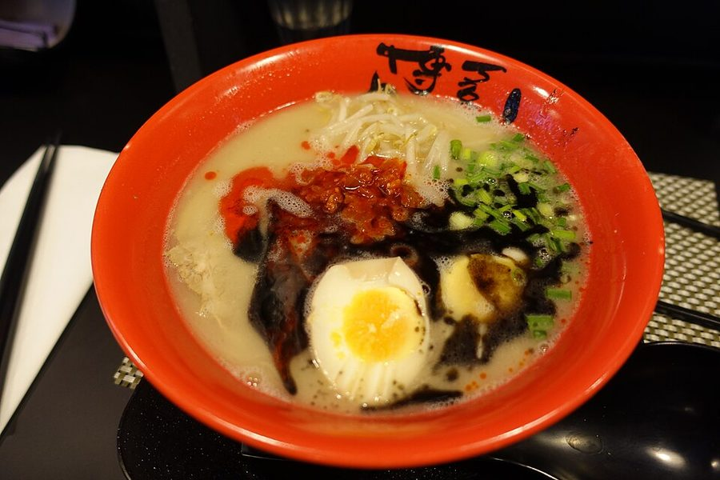
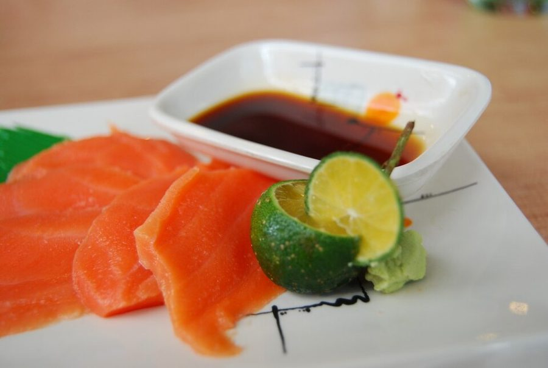
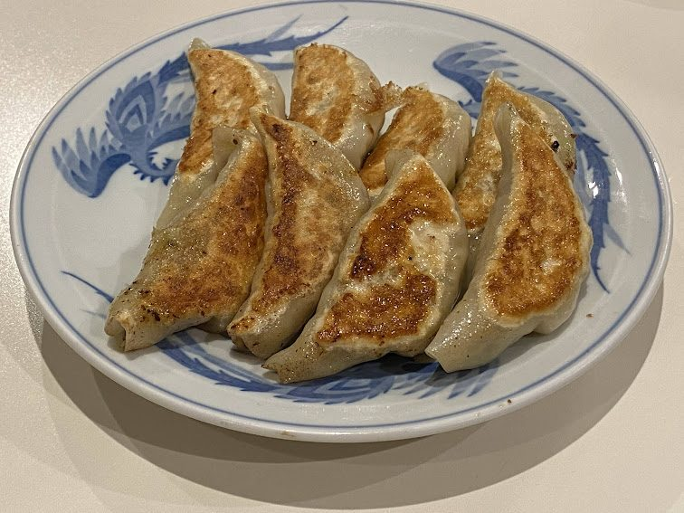
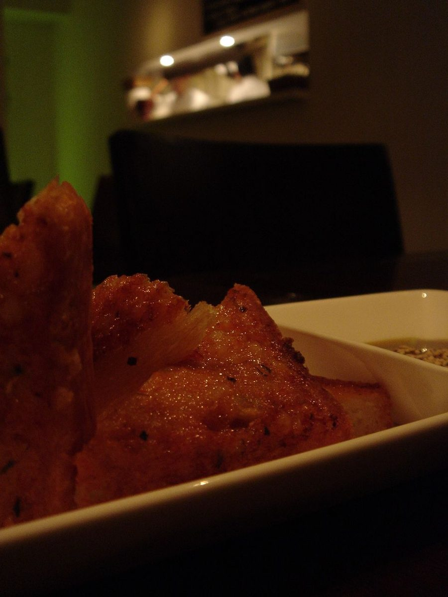
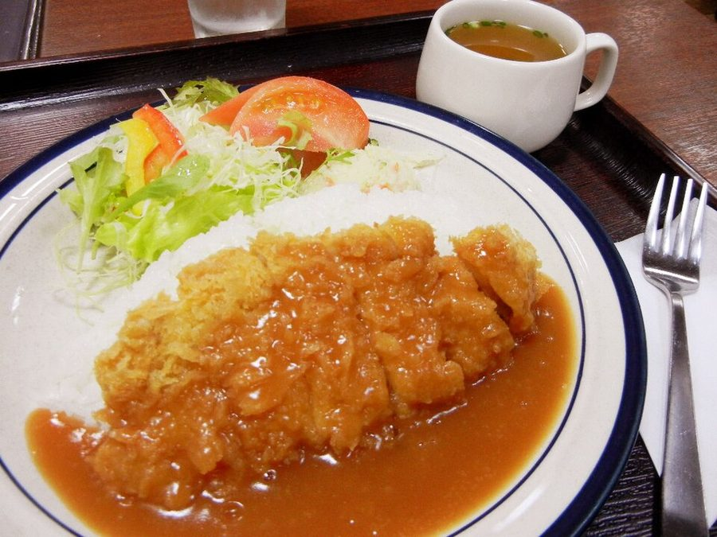
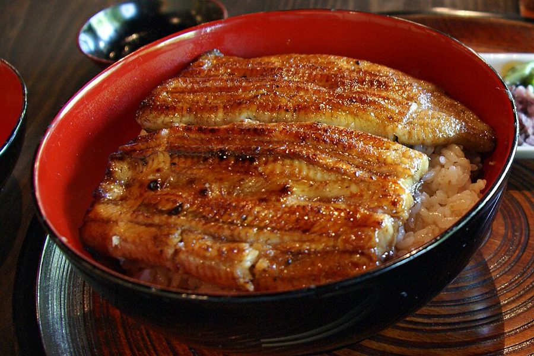
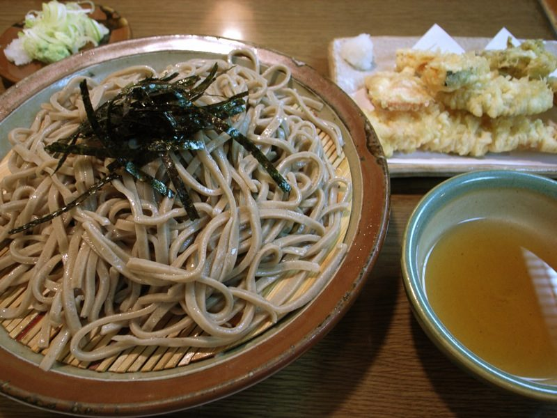

Hệ thiết kế RIMS
“Phiếu bếp” · neo-brutalist POS · retro
Chốt qua 7 phiếu phỏng vấn, 2026-09-27. Trang này không phải ảnh mô tả — nó được style bằng chính exports/tokens.css xuất ra để code lại. File token sai thì trang này vỡ. Nút bấm được, ô nhập gõ được, băng ảnh chạy thật.
Bấm ◑ Sáng / Tối để xem cả hai chế độ. Nguồn quyết định đầy đủ kèm lý do: docs/redesign/00-quyet-dinh.md.
01
Bốn màu nghĩa
Màu là nghĩa. Dùng màu không mang nghĩa là sai luật. Một đỏ duy nhất #c8271b kiêm cả màu thương hiệu — phân biệt bằng vị trí: ở vỏ app nó là nhận diện, trên nút nó là phá huỷ.
Chế độ tối không có bộ màu thứ hai. Giữ nguyên hue, chỉ nâng độ sáng vừa đủ đạt 3:1 — đỏ và hổ phách không phải đổi gì.
| Vai | Nghĩa | Sáng | Tối · nền tint | Tối · chữ | Tương phản | |
|---|---|---|---|---|---|---|
| LÀM | xong · lưu · thanh toán · bàn trống | #12703f | #16281d | #5fd08e | 6.15 / 10.55 | đạt |
| BỎ | huỷ · xoá · lỗi · quá hạn · thương hiệu | #c8271b | #2b1512 | #ff8a72 | 5.58 / 7.49 | đạt |
| CHỜ | đang nấu · đang phục vụ · cần chú ý | #a15c00 | #2a1f0b | #ffc94a | 5.19 / 10.55 | đạt |
| TIN | đã đặt trước · chờ thanh toán | #1b5fbf | #141c2e | #7aaaff | 6.11 / 7.38 | đạt |
| Bề mặt và mực | ||||||
| Nền trang | giấy ấm / xám tối | #f3f1ea | #131313 | — | ||
| Mặt thẻ | — | #ffffff | #1b1b1b | — | ||
| Mực | chữ chính | #111214 | #ececec | 16.58 / 14.58 | đạt | |
| Viền & bóng | cấu trúc — ở chế độ tối không bao giờ trắng | #111214 | #6b6b6b | — / 3.23 | đạt | |
Sáu luật màu
- Không màu nào dùng để trang trí — trừ trang công khai, và ở đó cũng không dùng bốn màu nghĩa.
- Tối đa 3 màu một khung nhìn, chưa kể mực và giấy. Chip xám (ca, phương thức trả, danh mục, số chỗ) không tính.
- Nút chính LUÔN lục, mọi màn. Một màn đúng một nút lục.
- Trạng thái không bao giờ chỉ mang màu — mọi chip có chữ và ký hiệu.
- Hổ phách không dùng cho nút. Chỉ cho trạng thái chờ.
- Chế độ tối giữ nguyên hue. Không có bộ màu thứ hai.
Luật nền tảng của chế độ tối — đo được, không phải gu
Mặt #1b1b1b so với nền #131313 chỉ đạt 1.08. Không sắc tối nào tách nổi 3:1 khỏi một nền tối. Nên ở chế độ tối cấu trúc do đường kẻ tạo ra, không do nền — và đường kẻ đó là trung tính vừa #6b6b6b, không bao giờ trắng. Viền trắng cộng bóng trắng trên nền gần-đen làm mỗi nút thành một miếng sticker dán.
02
Mặt chữ
Ràng buộc cứng: giao diện toàn tiếng Việt, mặt chữ phải đủ dấu. Cả ba đều có subset vietnamese. Đã loại Berkeley Mono và Departure Mono mà bài tham chiếu gợi ý, vì không có dấu tiếng Việt.
Display · Archivo 800 · IN HOA
Đơn cần chế biến
Tiêu đề màn, nhãn nút, số lớn. Roman, không bao giờ nghiêng.
Thân · IBM Plex Sans 400–600
Phiếu vẫn được giữ, chưa có món nào bị mất. Kiểm tra mạng rồi thử lại.
Mọi câu văn. Giọng kỹ thuật mà không lạnh.
Số & mã · JetBrains Mono
HD-2409-118
485.000 ₫ · 19:42
Mọi số trong bảng, tiền, giờ, mã đơn — tabular-nums.
Tiếng Việt không dùng Title Case. Chỉ hoa chữ đầu câu. Nhãn nút in hoa toàn bộ là do text-transform, không viết hoa trong chuỗi. Chữ nét đôi chỉ dùng từ 24px trở lên — dưới đó nét viền 2px ăn mất dấu.
03
Nút
Mọi nút cùng một khuôn. Nghĩa nằm ở màu. Biến thể kích cỡ --sm và --lg chỉ được đổi cỡ chữ và đệm trong — không được đổi nền, viền, bóng, hover hay active. Nút huỷ cỡ nhỏ nhất trong hàng bảng vẫn có nền, viền 2px, bóng lệch, và lún vào bóng khi bấm.
Bốn màu
.b · .b--go · .b--stop · .b--inkBa vai — nhãn lấy đúng từ code hiện tại
Ba cỡ — cùng nền, cùng viền, cùng bóng, cùng hover
Tám trạng thái, bắt buộc có đủ
default · hover · focus · active · disabled · loading · error · successVô hiệu có sọc chéo mờ, không chỉ nhạt màu — người nhìn kém vẫn đọc ra là không bấm được. Focus vòng 3px màu TIN, cách nút 3px, hiện tức thì không hoạt hoạ — viền 2px dễ ăn mất vòng focus nên vòng nằm ngoài. @media (pointer: coarse) nâng mọi nút lên 48px.
Giảm bấm nhầm: nút phá huỷ đặt cách nút chính tối thiểu 24px, và việc không đảo được phải qua hộp thoại xác nhận.
App hiện chỉ có ba vai nút, đọc từ code: rk-btn--go (Xong món · Thanh toán) · rk-btn--danger (Hủy món) · rk-btn--quiet (Làm mới · Quay lại · Xoá bộ lọc · Tìm). Token có sẵn biến thể mực tô đặc nhưng chưa có hành động thật nào cần nó — đừng dùng cho tới khi có. Bản trước của spec này vẽ hai nút “Chốt đơn” và “Để sau”; cả hai đều không tồn tại trong app và đã bị gỡ.
04
Nhập liệu
Ô nhập
.iNhãn luôn ở trên. Không dùng nhãn nổi — tiếng Việt có dấu, nhãn nổi cắt mất dấu ở cỡ nhỏ. Lỗi phải nói rõ sai gì và phải làm gì, không bao giờ chỉ đổi màu viền.
Chọn · bật tắt · số lượng
select · .check · .qtyHộp kiểm vuông · radio tròn
Số lượng món — nút −/+, bấm vào số thì gõ được
Radio tròn là ngoại lệ duy nhất của luật bo góc 0px — quy ước quá mạnh để phá. Đánh dấu bằng lục, đúng luật “lục là làm”.
05
Chip trạng thái — 13 trạng thái thật
Toàn bộ trạng thái có trong code, lấy từ bốn enum trong backend/.../enums. Không có cái nào bịa thêm. Ký hiệu gán theo nghĩa của trạng thái, không theo màu — vì ✓ cho “bàn trống” là sai nghĩa: trống không phải việc đã xong. Chip không dùng icon — ký hiệu chữ là đủ, và giữ cho check chỉ có một nghĩa.
| Enum · giá trị | Chip | Màu | Ký hiệu | Vì sao ký hiệu đó |
|---|---|---|---|---|
| TableStatus | ||||
AVAILABLE | ○Bàn trống | LÀM | ○ | vòng rỗng = chỗ còn rỗng |
RESERVED | ★Đã đặt trước | TIN | ★ | có hẹn, được giữ chỗ |
SERVING | ●Đang phục vụ | CHỜ | ● | vòng đặc = đang có người |
| OrderStatus | ||||
SERVING | ●Đang phục vụ | CHỜ | ● | cùng nghĩa với bàn đang phục vụ |
LOCKED | ₫Chờ thanh toán | TIN | ₫ | đơn đã chốt, việc còn lại là tiền |
COMPLETED | ✓Đã thanh toán | LÀM | ✓ | xong thật, không còn việc gì |
| OrderItemStatus | ||||
PREPARING | ...Đang chế biến | CHỜ | ... | đang diễn ra, chưa kết thúc |
COMPLETED | ✓Đã xong | LÀM | ✓ | bếp đã làm xong món |
CANCELLED | ✕Đã huỷ | BỎ | ✕ | bị bỏ đi |
| ReservationStatus | ||||
QUEUED | ▸Chưa tới giờ | TIN | ▸ | mũi tên = còn ở phía trước |
WAITING | ▲Đang tới giờ | CHỜ | ▲ | tam giác = cần chú ý ngay |
COMPLETED | ✓Đã nhận bàn | LÀM | ✓ | khách đã tới và có đơn |
CANCELLED | ✕Đã huỷ | BỎ | ✕ | quá giờ 15 phút hoặc tự huỷ |
| Chip xám — THUỘC TÍNH, không phải trạng thái, không tiêu ngân sách 3 màu | ||||
PaymentMethod · OrderShift · danh mục · số chỗ · khu |
Tiền mặt Mã QR Ca tối 4 chỗ | xám | — | thuộc tính không có “tình trạng” |
06
Bề mặt
Thẻ bàn
.tcardSố bàn to nhất — phục vụ tìm bàn bằng số. Đúng ba thẻ, vì TableStatus chỉ có ba giá trị: AVAILABLE · SERVING · RESERVED. Bản trước của spec này có thêm thẻ “Đang dọn” — trạng thái đó không tồn tại và đã bị gỡ. Nhãn lấy đúng từ code.
Phiếu bếp
.ticketKẻ chấm giữa món gợi phiếu in nhiệt và nhẹ hơn kẻ liền. Hành động nằm ngay trên phiếu. Nút huỷ nhỏ hơn và đặt xa — nhưng vẫn đủ nền, viền, bóng, hover.
Thẻ món có ảnh
.dish · ảnh thật trong repo


Ảnh là nhân vật chính. Cột lưới không nhỏ hơn 15rem — màn rộng thì ảnh to hơn, không phải nhiều cột hơn.
Ô thống kê · số kiểu bảng tỉ số
.stat · .cntMỗi chữ số một ô, kể cả dấu phẩy — ô ngăn cách dùng đúng khuôn với ô số. Đơn vị nằm trên nhãn, không nằm dưới ô, để ba ô có cùng một cấu trúc: nhãn rồi số, hết. Đệm số 0 để chiều rộng không nhảy khi số đổi.
07
Bảng — luật tiết chế
Đây là chỗ hai bài tham chiếu cảnh báo style này làm dở, và RIMS có 11 màn quản trị toàn bảng. Cách tiết chế: đầu bảng là thanh mực đặc, trong lòng bảng kẻ mảnh 1px, không bóng, ô không in hoa. Viền 2px và bóng cứng chỉ ở khung ngoài.
| Mã hoá đơn | Ngày | Bàn | Ca | Tổng tiền | Trạng thái | Thao tác |
|---|---|---|---|---|---|---|
| HD-2409-118 | 27/09 19:12 | 04 | Ca tối | 312.000 ₫ | ₫Chờ thanh toán | |
| HD-2409-117 | 27/09 18:44 | 06 | Ca tối | 485.000 ₫ | ✓Đã thanh toán | |
| HD-2409-116 | 27/09 12:30 | 02 | Ca sáng | 198.000 ₫ | ✓Đã thanh toán | |
| HD-2409-115 | 26/09 20:05 | 09 | Ca tối | 742.000 ₫ | ✕Đã huỷ |
Hộp cuộn ngang có tabindex="0" để cuộn được bằng bàn phím — không có thì người không dùng chuột mất cột cuối. Ở 320px vẫn cuộn ngang, không biến hàng thành thẻ. Bảng này đang dùng đúng ba màu; chip ca là xám nên không tính.
08
Lớp nổi
Hộp thoại xác nhận
.modal — chỉ cho việc KHÔNG đảo đượcĐơn này đã có 2 món đang chế biến. Huỷ đơn sẽ huỷ luôn cả hai món đó ở bếp.
Việc này không hoàn lại được.
Nhãn nút nói rõ hậu quả — “Huỷ đơn và 2 món”, không phải “OK”. Nút an toàn bên trái, nút phá huỷ xa nhất, cách nhau ≥24px. Việc đảo được thì làm ngay + cho Hoàn tác, không hỏi lại.
Toast
.toast — góc trên phải, xếp chồng xuốngThành công thì im lặng. Lưu xong thì dữ liệu đổi tại chỗ. Toast chỉ dành cho việc xảy ra ngoài tầm mắt — bếp báo món xong, bàn đổi trạng thái do người khác. Toast có Hoàn tác sống ít nhất 10s và không tự mất khi đang rê chuột vào.
09
Rỗng · đang tải · lỗi
Ba màn bị bỏ quên nhiều nhất, và là ba màn nhân viên gặp lúc đang căng nhất.
Rỗng vì đã xong — tin tốt, không có nút
Không có phiếu nào chờ chế biến. Phiếu mới sẽ tự hiện ở đây.
Rỗng vì chưa có — việc cần làm, có nút lục
Thêm món đầu tiên để nó xuất hiện trong thực đơn của khách.
Đang tải — khung xương, không phải vòng xoay
Với bảng và danh sách, khung xương cho biết sắp có gì. Vòng xoay chỉ dùng khi không biết trước hình dạng.
Lỗi ba phần
Mất kết nối với máy chủ. Phiếu vẫn được giữ, chưa có món nào bị mất.
Ba phần bắt buộc: chuyện gì xảy ra · dữ liệu của bạn còn hay mất · làm gì tiếp. Câu giữa hay bị bỏ nhất mà lại là câu người dùng lo nhất. Không bao giờ chỉ “Đã có lỗi xảy ra”. Không gọi người dùng — câu không chủ ngữ.
10
Vỏ app
Rail 4.6rem icon + nhãn · hàng breadcrumb và đồng hồ ở trên · băng mục con ở dưới · không hiện tên người dùng · ca làm là icon cạnh đồng hồ. Quản trị gộp 10 mục thành 4 nhóm.
Màn Quản lý món ăn — màn duy nhất cần cả rail, băng, breadcrumb và đồng hồ
Quản lý món ăn
43 món · 41 đang bán
Cặp nút Thẻ / Bảng chỉ có ở ba màn có ảnh, mặc định thẻ, nhớ lựa chọn theo từng người dùng. Dưới 60rem: rail thu thành ngăn kéo mở bằng nút trên hàng breadcrumb; băng mục con cuộn ngang.
Kanban ba cột ở dưới 52rem thành một cột + băng tab có số đếm
11
30 icon
Cơ chế học từ theme qlcv-aura của dự án kpi-manage: một bảng hằng ICONS, mỗi icon chỉ là chuỗi <path>; một component <Icon name>; viewBox 24; aria-hidden; độ dày nét đặt một lần ở .rims-i. Hình học vuông hoá: rx = 0, không vòng tròn, đầu nét vuông, nét 2.
30, không phải 29. Con số 29 ở phiếu 05 tính trước khi gỡ trùng nghĩa. Việc thu hẹp x xuống đúng nghĩa đóng đã tách nó ra khỏi ban (huỷ), nên bộ tăng thêm một icon. Đó là cái giá đúng của luật một-nghĩa-một-icon.
Luật gốc
Một nghĩa một icon, một icon một nghĩa
Khi một icon mới cần một nghĩa đã bị chiếm, icon cũ phải bị thu hẹp nghĩa và việc đó phải được viết xuống trong comment ngay tại icons.ts.
| Bốn chỗ trùng nghĩa của RIMS và cách gỡ |
|---|
1 · table giữ nghĩa bàn ăn; chế độ xem thẻ đổi sang cards (hai dải ngang), vì hình bốn ô vuông từng mang cả hai nghĩa. |
2 · ticket có khung; rows không khung, chỉ bốn vạch trần — đó là thứ duy nhất phân biệt hai hình ở cỡ 17px. |
3 · check chỉ cho nút và hộp kiểm; chip trạng thái dùng ký hiệu chữ, không dùng icon. |
4 · ban = huỷ (đổi trạng thái) · x = đóng (đã thu hẹp nghĩa) · trash = xoá (mất hẳn). |
| Không vẽ icon cho: trạng thái (đã có ký hiệu chữ) · món ăn (đã có 43 ảnh thật) · phương thức trả (chip chữ rõ hơn) · thống kê (ô số đã đủ) |
Bài test bắt buộc: (1) mọi khoá trong ICONS phải có trong ICON_MEANING và ngược lại — bắt icon mồ côi; (2) mọi icon phải được dùng ít nhất một chỗ trong code — bắt icon không ai dùng |
12
Sáu thủ pháp retro
Màn vận hành chỉ dùng ba thủ pháp không tốn màu nào — để dành toàn bộ ngân sách 3 màu cho trạng thái.
| Thủ pháp | Công khai | Vận hành | Quản trị | Tốn màu? |
|---|---|---|---|---|
| Sọc kẻ chéo | được | được — nút vô hiệu, trạng thái rỗng, vùng chưa có dữ liệu | được | không |
| Chữ nét đôi | được — tiêu đề lớn | chỉ màn kết quả thanh toán | không | 1 màu |
| Số kiểu bảng tỉ số | được | được — ô thống kê, số bàn, đồng hồ | được | không |
| Chấm halftone | được — dải khối lớn | không | không | 1 màu |
| Tia starburst | được — tối đa 1 cái/màn | không | không | 1 màu |
| Băng chữ chạy | được | được — thông báo ca, món hết, bếp nghẽn | không | không |
Trang khách — đủ bộ, cả ba dùng cùng một màu
Thực đơn
mới
Màn vận hành — ba thủ pháp, không màu nào
Băng ảnh món · trang chủ
40 giây một vòng · dừng được · bấm thì cuộn tới món trong lưới



Dừng khi bấm nút · rê chuột · focus bàn phím, và đứng yên ngay từ đầu nếu hệ thống bật prefers-reduced-motion — có người chóng mặt vì chuyển động tự động, cái đó không phải lựa chọn. Nửa sau là bản sao có aria-hidden để vòng lặp -50% không giật.
13
Bản đồ 37 màn
Mỗi màn nhận khung theo việc nó làm, nhưng tất cả dùng chung một bộ component, một bảng màu, một giọng nút. Tên file lấy đúng từ frontend/src/features.
| Màn | Khung |
|---|---|
| Công khai & xác thực | |
HomePage | Danh mục dính + lưới ảnh · băng ảnh tự cuộn 40s có nút dừng · ô đăng nhập động ở góc (route /login vẫn giữ để chuyển hướng khi hết hạn token) |
LoginPage · RegisterPage · ForgotPassword · ForceChangePassword | Biểu mẫu ≤46rem |
CustomerReservations | Y hệt luồng đặt bàn của Phục vụ |
| Vận hành | |
WaiterTableListPage | Sơ đồ mặt bằng thật — toạ độ x,y,w,h,zone trong DB; khung hẹp thu nhỏ + phóng hai ngón |
WaiterCreateOrderPage · WaiterUpdateOrderPage | Giống thực đơn: lưới ảnh món to + giỏ đơn là cột dính bên phải |
WaiterOrderDetailPage · WaiterReservationDetailPage | Một bản ghi, phiếu dọc, hành động trên phiếu |
WaiterCreateReservationPage · WaiterEditReservationPage | Biểu mẫu ≤46rem |
KitchenQueuePage · ChefDashboardPage · GroupedKitchenPage | Kanban ba cột trạng thái · dưới 52rem thành một cột + băng tab |
CashierPaymentsPage | Kanban ba cột: Chờ trả · Đang xử lý · Đã trả |
CompletedOrdersPage · CancelledOrdersPage · CashierInvoicesPage | Bảng dày + lọc |
PaymentSuccess · PaymentFailed | Một khối lớn giữa màn — chỗ duy nhất dùng chữ nét đôi ở họ vận hành, và chỗ duy nhất còn giữ chữ “thành công” |
DishListPage | Lưới thẻ ảnh, chỉ đọc |
| Quản trị | |
AdminDishesPage · AdminCategoryPage · AdminMenuDashboardPage | Thẻ ảnh, đổi được sang bảng, mặc định thẻ, nhớ theo người dùng |
AdminUsersPage · AdminTablesPage · AdminRestaurantPage | Danh sách + biểu mẫu cạnh nhau |
AdminPaymentHistoryPage · AdminPaymentDetailPage | Bảng dày + rail lọc |
AdminStatisticsPage · RevenueOverviewPanel | Dải số to + biểu đồ + bảng |
ProfilePage | Biểu mẫu ≤46rem, dùng chung cho 5 vai trò |
| MỚI — màn thứ 37 | Quản trị vẽ mặt bằng: kéo thả bàn, đặt quầy bar và cửa |
14
Việc phải làm ngoài giao diện
Ba việc đầu không phải CSS — cần backend và phải tính vào kế hoạch. Nói trước để không vỡ tiến độ giữa đường.
| # | Việc | Vì sao |
|---|---|---|
| 1 | Thêm x, y, w, h, zone cho bàn trong schema.sql + API lưu mặt bằng | Sơ đồ mặt bằng thật cần biết bàn nằm ở đâu |
| 2 | Thêm màn thứ 37: Quản trị kéo thả vẽ mặt bằng | Ai đó phải vẽ mặt bằng. Kéo thả trên cảm ứng phải tự viết — dự án motion-cut, không cài thư viện |
| 3 | Phóng to hai ngón cho sơ đồ mặt bằng ở khung hẹp | Mặt bằng 8 bàn ngang không thu nhỏ được mà vẫn bấm được |
| Frontend thuần — sửa 6 chỗ giọng văn đã đếm trong code | ||
| 4 | hủy → huỷ | 27 chỗ |
| 5 | … → ... | 83 chỗ |
| 6 | Tình trạng → Trạng thái | 1 chỗ |
| 7 | Bỏ "thành công!" | 9 chỗ — chỉ giữ ở màn kết quả thanh toán |
| 8 | Sửa Đặt Bàn → Sửa đặt bàn | tiếng Việt không dùng Title Case |
| 9 | Bốn tên cho một phương thức QR → Mã QR | VNPay/QR 2 · VNPay / QR 3 · Thẻ / VNPay 1 · Chuyển khoản/QR 1 = 7 chỗ. Khớp enum PaymentMethod.QRCODE |
| 10 | xóa → xoá | 9 chỗ — cùng họ lỗi với hủy/huỷ |
15
File để code lại
Ba file trong docs/redesign/exports/. Bấm để mở.
Sổ quyết định đầy đủ, kèm lý do và cả những chỗ tôi làm sai rồi sửa: docs/redesign/00-quyet-dinh.md · bảy phiếu phỏng vấn: 01 hướng · 02 khung màn · 02b ngoại lệ · 02c hệ màu · 03 đỏ retro · 04 component · 04b chế độ tối · 05 icon & giọng văn.